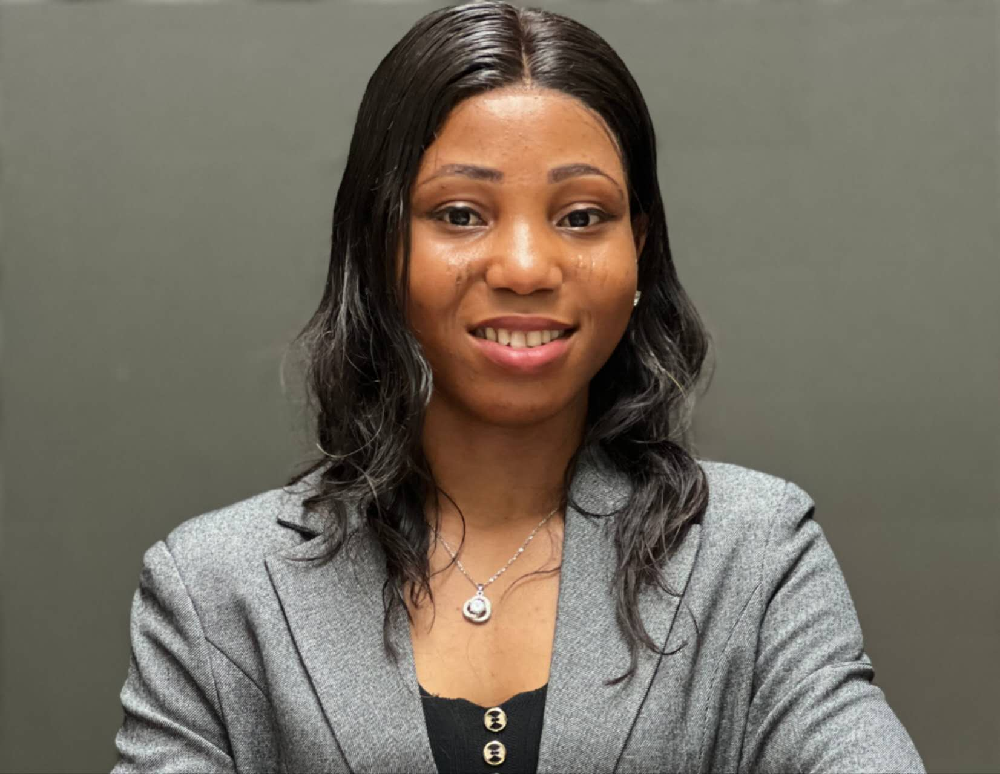

Clean Water and Sanitation
Contributing to sustainable wastewater treatment and safe water reuse through biological nutrient removal and emerging contaminant degradation.
Environmental Scientist · PhD Researcher
PhD Institute of Soil Science, Chinese Academy of Sciences
M.Sc. UNEP-Tongji Institute of Environment for Sustainable Development (IESD)
Restoring ecosystems through microbial innovation.
Advancing algal-bacterial bioremediation for nutrient recovery, emerging contaminants, and herbicide-contaminated environments.

Throughout my career, I have been dedicated to addressing environmental challenges through innovative research and practical problem-solving. I hold a Bachelor of Science in Microbiology and a Master's degree in Environmental Science from Tongji University, China. During my Master's research, I focused on nutrient and antibiotic removal in biofilm reactors for high-ammonium wastewater treatment.
My research interests center on ecology and bioremediation for addressing pollution and climate change, including biological nutrient removal, energy recovery, and the impacts of emerging contaminants on microbial communities and ecosystem health. I am currently pursuing a PhD focused on the bioremediation of herbicide-contaminated environments, particularly the use of algal-bacterial consortia for herbicide degradation.
I aim to translate scientific advances into practical and sustainable solutions to pressing environmental and societal challenges.
8+
Peer-reviewed publications from 2024 to 2026
3
Soil types in PhD research on algal-bacterial consortia
90%+
Ammonium removal in a designed biofilm reactor
2
Countries, Nigeria and China, plus international collaborations
Ecology and bioremediation for pollution control and climate action, with current doctoral work on algal-bacterial consortia in herbicide-contaminated systems.
Coupled herbicide biodegradation and nitrogen fixation in paddy fields, and biofilm reactors for ammonium-rich wastewater.
Nutrient and antibiotic removal, energy recovery, and microalgae pathways for sustainable wastewater treatment.
Impacts of herbicides, antibiotics, and other pollutants on microbial communities and ecosystem health.
Soil-type effects and bacterial community change during pollutant degradation in environmental bioremediation.
This research contributes to global sustainability targets through water treatment, climate action, and land restoration.
Contributing to sustainable wastewater treatment and safe water reuse through biological nutrient removal and emerging contaminant degradation.
Advancing bioremediation strategies that reduce greenhouse gas emissions from agricultural and wastewater systems while enhancing soil and water health.
Restoring soil health and microbial diversity through algal-bacterial consortia in herbicide-impacted agricultural ecosystems.
Research on antibiotic removal and emerging contaminants reduces exposure risks to harmful chemicals.
Sustainable wastewater treatment and circular nutrient recovery support resource efficiency.
Doctoral research on the bioremediation of herbicide-contaminated environments, with emphasis on algal-bacterial consortia for herbicide degradation.
GPA: 4.56 / 5.0
Dissertation: Enhanced Nutrient and Antibiotic Removal in Algal-Bacterial Biofilm Reactors for Treating Ammonium-rich Wastewater
Advisor: Prof. Wang Rongchang
Chinese Government Scholarship (China Scholarship Council): fully funded Master's studies at Tongji University.
GPA: 3.67 / 5.0
Dissertation: Analysis of vaginal discharge in female reproductive organs from a biological perspective
Advisor: Allen Micheal
International Seminar, UNEP-Tongji · 2023
Amnesty International · 2023
Amnesty International · 2023
Amnesty International · 2023
Enterprise Development Center and Young Africa Works · 2023
Ask Questions to Make Data-Driven Decisions; Foundations: Data, Data Everywhere · 2023
Tongji University · 2022
Chartered Institute of Environmental Health and Safety, USA · 2022
Jobberman Certificate of Achievement · 2020/2022
Shanghai, China · 2023
China · 2023
World Health Organization · 2022
Primary Healthcare Board · 2022
2022
World Health Organization · 2022
Redeemed Christian Fellowship · 2019
World News of Natural Sciences (WNOFNS) 53 (2024) 169-185, EISSN 2543-5426
World News of Natural Sciences (WNOFNS) 52 (2024) 126-138, EISSN 2543-5426
Journal of Geography, Environment and Earth Science International
International Journal of Environmental Science and Technology
Fully funded Master's studies at Tongji University, sponsored by the China Scholarship Council (CSC).
2nd China-Africa Youth Innovation and Entrepreneurship Competition, for AfricPay, a proposed cross-border payment system to support secure, efficient, and affordable transactions between China and Africa.
View detailsPeer reviewer for Elsevier journals including Journal of Water Process Engineering and Chemical Engineering Journal, evaluating manuscripts on wastewater treatment and environmental engineering.
Common questions about Odunayo Blessing Adesina, her research, and how to get in touch.
Odunayo Blessing Adesina is a Nigerian environmental scientist and PhD researcher. She works on algal-bacterial bioremediation, nutrient recovery, and emerging contaminants.
Her doctoral research focuses on the bioremediation of herbicide-contaminated environments, particularly the use of algal-bacterial consortia for herbicide degradation at the Institute of Soil Science, Chinese Academy of Sciences.
She is completing an M.Sc. in Environmental Science at Tongji University through the UNEP-Tongji Institute of Environment for Sustainable Development (IESD). Her dissertation examined enhanced nutrient and antibiotic removal in algal-bacterial biofilm reactors for ammonium-rich wastewater. Her GPA is 4.56 out of 5.0.
Her research interests centre on ecology and bioremediation for pollution and climate change, including biological nutrient removal, energy recovery, and the effects of emerging contaminants on microbial communities and ecosystem health.
Her work aligns with SDG 6 Clean Water and Sanitation, SDG 13 Climate Action, and SDG 15 Life on Land. It also supports SDG 3 Good Health and Well-being and SDG 12 Responsible Consumption and Production.
Yes. She has 8 or more peer-reviewed publications from 2024 to 2026, including papers in Science of The Total Environment, Biodiversity, and Aquatic Ecology.
Use the contact form on this website, email odunayoblessing6@gmail.com, or download her CV from the About section. She is also on ORCID, ResearchGate, and LinkedIn.
Institute of Soil Science, Chinese Academy of Sciences
UNEP-Tongji Institute of Environment for Sustainable Development (IESD)
odunayoblessing6@gmail.com
(+86) 16606732990
(+234) 8169277829